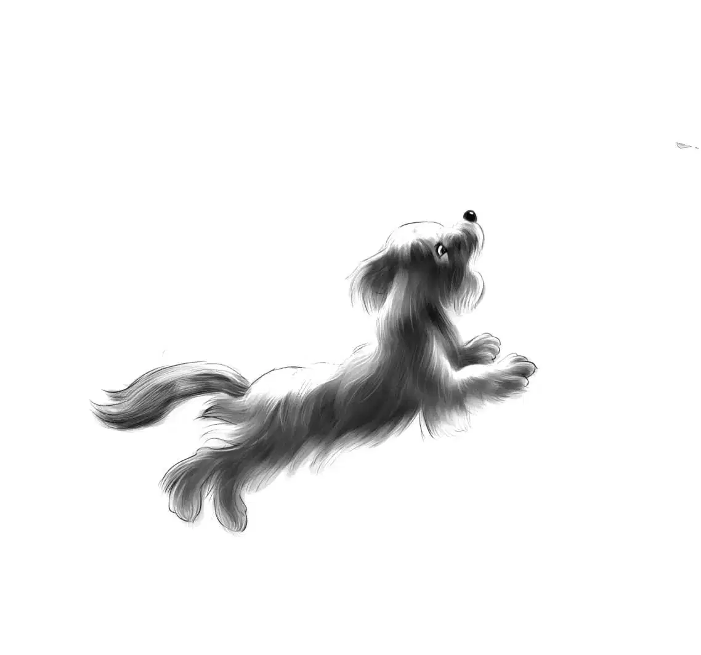

One Puzzle Left
此时此刻，孩子们一心只想带着小狗赶回家去。他们已经商量好，除了吃饭和睡觉，中途不再停留。
“既然‘二次登陆’是必经之地，”维莉说，“咱们得去兰多太太家打个招呼才行。”
“也好。”杰西说，“当初咱们答应过的，说返程的时候可能会过去。”
孩子们不紧不慢地骑着，享受着最后一段旅程。转眼到了旅途的最后一天，就在马上要吃午饭的时候，小影儿突然不听使唤，拔腿跑开了。

“回来！”班尼大声喊道。但小影儿丝毫没有回来的意思。
“我还以为你是一只听话的狗狗！快回来！听到没有！”班尼扯着嗓子喊道。
小影儿根本没有理会，只顾着一路狂奔。
亨利观察了一阵，低声说道：“咱们必须跟上去，这时候可不能把它弄丢了。”
孩子们当即加快速度，渐渐追上了小影儿。
“这样跑下去，它会弄伤爪子的，亨利。”维莉说道，“你不能带它一程么？”
“怕是做不到，我根本抓不到它。”亨利说，“毫无疑问，它准是知道自己要回家了。看它的小短腿，迈得有多快啊！”
“等等我们！”班尼高声叫着，但小影儿丝毫也没有停留。
“看样子像是朝‘二次登陆’跑呢！”杰西说道，“前面就是马丁先生的商店了。你们说，会不会是马丁先生家的狗？”
“我看不像。”亨利说，“马丁先生不像是丢了这么一条漂亮小狗的样子！”
“也不可能是兰多太太家的。”班尼插话道，“她看起来也不像。再说，她家地板上没见到有小狗的食盆，院子里也没有小狗的窝。”
“可是你看小影儿的样儿，好像它家就在‘二次登陆’一样。”杰西说道。
只见小影儿越跑越快，仿佛在百米冲刺一般。
“说不准呢！”班尼叫道，“快看！马丁先生就坐在台阶上呢。嗨！马丁先生！”
奥登兄妹停下自行车，小影儿跑了几步，终于也蹲了下来——它累坏了。
“哈！我们的小车手到啦！”马丁先生高兴地叫了起来，“一路上还好吧？碰到什么事情没有？”
班尼指了指小狗说：“我们遇到了这只小狗，它跟了我们一路呢！”
马丁先生这才看到小狗。令人吃惊的是，他竟然起身召唤道：“过来，灰灰！到这儿来，灰灰！”
“灰灰！”杰西惊讶地叫了起来，“您认识这只狗，马丁先生？”
“当然认识！它是兰多家的狗。”
“兰多家养的？”
“噢，不是他们夫妻俩的。”马丁先生说，“是卡尔的，他舅舅艾瑞克送的生日礼物。看，它想邀请你们到它家去呢！”
果然，小影儿又跑了起来，只是没跑几步便回头望着他们。孩子们立即追了上去。此时此刻，小影儿已经不再呜咽了。
“见到这小狗，保管他们全家都欢喜！”马丁先生在身后喊道。
从马丁先生的店到兰多家并不远——奥登兄妹之前就已经走过。这当儿，小狗欢叫着，班尼则跑上前，敲了敲门。
兰多太太来到门口，看了一眼，忍不住惊呼起来：“噢，是灰灰！是灰灰！”她忙不迭地打开门，小狗嗖的一下蹿到了她的怀里，拼命摇着尾巴，欢叫着、哼哼着，舔着她的双手。
奥登兄妹静静地站在一边，注视着他们。过了好一会儿，兰多太太才抬起头来，眼里噙着泪水：“谢谢你们送它回家！可是，你们怎么知道它是我们家的狗狗？”
“我们原本并不知道。”杰西答道，“这事儿说来话长。自从遇见它开始，我们就一直在帮它找主人。”

“快进来，坐下说！要知道，这小狗是我哥哥艾瑞克送给卡尔的生日礼物。灰灰接受过很好的训练，我们打算让它去阿什比参加狗展。它来咱们家还不到一个星期，但大家都好爱它。”
“我们也是。”维莉说道。
众人坐了下来，注意力全都在小狗身上，只见它在屋里上上下下跑了一圈，闻遍每个角落后，才又跑回到兰多太太的身边。
“你们的照片上了今早的报纸，”兰多太太说，“我当时就确定，站在你们身旁的就是灰灰，我正在想，怎样才能联系到你们呢。”
“照片是谁拍的，我清楚得透透儿的。”班尼说道，“是那对夫妇，他俩一路跟踪咱们，就惦记着要抢走灰灰。他们这么做，是想让人家误以为我们偷了小狗。那照片下面写了些什么？”
“也没什么，就写着：丢失的单车小狗。”兰多太太说，“后来我接到了好几个电话，大家都说那一定就是卡尔的小狗。”
“我就说嘛！”班尼说道，“他俩偷拍照片就是为了诬陷咱们。要我看，他们才是货真价实的偷狗贼哩！”
“我还是不知道你们在哪儿碰到灰灰的？”兰多太太问道。
于是孩子们讲起了他们是如何在老房子里避雨，又是如何遇到了不停呜咽的小狗。
“它跟着我们去了简姑婆家，又一路跟了回来。”杰西说，“可我们还是不明白，它到底是怎样走丢的！”
“唉，”兰多太太讲述道，“还记得么，你们上次来的时候，卡尔恰好去露营了？送卡尔上了公交车以后，我就赶着去买一些要紧的食材。我当时把灰灰放进旅行车，开车去了购物超市。那地方很远，离这儿有25英里。因为灰灰不能进超市，我只好把它留在了车里，我还特地把车窗摇下一条缝隙，给它透气。”
奥登兄妹点了点头。
“我做了件错事儿。”兰多太太说，“灰灰可能就是从那扇车窗里挤出去的，尽管我不明白它是怎么做到的。反正等我买完东西出来，它就不见了！”
“当时有人见到它吗？”维莉问道。
“当时周围没有人，只有几百辆车停在那里，我也没处问去，只好拼命叫着它的名字。”兰多太太说，“最后实在没法子，只有开车回家了。”
“可怜的卡尔。”维莉说，“灰灰跑丢的事情，您有没有告诉他呢？”
“没有。我只是在心底里盼着，盼着灰灰能自己回来。可它来这儿的时间这么短，我觉得它根本就不认识回家的路。而且我还害怕有人发现它之后，会把它给关起来。”

“我们过来帮忙的时候，您就是在为这事儿发愁吧？”杰西问道，“当时我们就注意到您有烦心事，可为什么不告诉我们呢？”
“我哪里开得了口！”兰多太太说，“大家开开心心的，我哪能泼冷水呢！我还生怕自己一时忍不住，扫了客人的兴。”
“您是说伊凡先生吧？”班尼说道，“不过他挺善解人意的。现在好了，总算可以告诉卡尔啦！”
“是啊，他明天就回来了。我有好多事情要跟他讲，比如灰灰是怎么走丢的，又是怎么回来的……还有，我们马上要搬到波士顿去了。”
“真是太好了。”杰西的眼睛亮闪闪的，“伊凡先生说您是个随和的人，我真为您高兴！”
“我要给艾瑞克打个电话，让他也高兴高兴。这下可以让灰灰去阿什比表演了。你们几个也一起去吧，节目会很精彩的。”
“一定要去！”班尼说，“我们连票都准备好了。”
“你们真是好运气，这票很难买到的。”兰多太太说道，“不过灰灰更幸运，它遇到的是你们，而不是别人。”
“这下我总算明白什么叫做幸运儿 [1] 啦！”班尼叫了起来。
奥登兄妹又待了一阵，准备起身回家了。兰多太太说道：“过不了几天就是狗展了，我会提醒你们，给你们打电话的。”
骑车回家的路上，亨利说道：“还有一个谜团没有解开。那就是从灰灰被留在车里，到它去老宅子避雨，直到碰见咱们，这期间发生了什么？”
“我也在想这个问题。”班尼说道。
[1] “幸运儿”的英文说法为lucky dog，幸运的小狗。